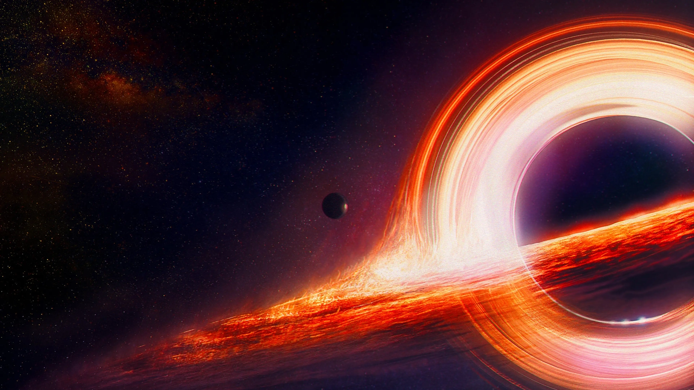

17 min read
Black holes are regions in space where the gravitational pull is so strong that nothing, not even light, can escape from it. The concept of black holes dates back to the 18th century, but it wasn't until Einstein's theory of general relativity in the 20th century that the modern understanding of black holes began to take shape. This theory predicted the existence of "singularities," points of infinite density where the laws of physics as we know them break down.
Embark on an exploration of one of the cosmos' most mysterious phenomena with "The Role of Black Holes in the Universe." This guide delves into the enigmatic nature of black holes, their discovery, the various types—including stellar, supermassive, and intermediate—and the pivotal role they play in the cosmic ballet of galaxy formation. With the advent of recent observations, such as the groundbreaking first image of a black hole's event horizon, our understanding of these celestial objects has been revolutionized, offering new insights into the fabric of the universe.
Stellar black holes are formed by the gravitational collapse of massive stars at the end of their lifecycle. When a star exhausts its nuclear fuel, it may undergo a supernova explosion, leaving behind a dense core that, if massive enough, collapses into a black hole. These black holes typically have masses up to 20 times that of the Sun.
At the heart of nearly every galaxy, including our own Milky Way, lies a supermassive black hole, millions to billions of times the mass of the Sun. The origins of these colossal entities remain a topic of active research, with theories suggesting they may form from the merger of smaller black holes or directly from the collapse of vast gas clouds in the early universe.
Intermediate black holes are the elusive middle ground, with masses between stellar and supermassive black holes. Their existence has been theorized to explain certain cosmic phenomena, but evidence of their presence has been harder to come by. These black holes may represent a critical stage in the growth of supermassive black holes.
Black holes are not just cosmic vacuum cleaners; they play an integral role in the formation and evolution of galaxies. The gravitational forces exerted by supermassive black holes can influence the distribution of stars and gas in a galaxy, regulating star formation and contributing to the galaxy's overall structure. Furthermore, the energetic processes associated with accretion of matter onto supermassive black holes, known as active galactic nuclei, can inject energy into the surrounding galaxy, impacting its evolution.
The first-ever image of a black hole's event horizon, captured by the Event Horizon Telescope (EHT) collaboration in 2019, marked a monumental achievement in astrophysics. This image, of the supermassive black hole in the galaxy M87, provided direct visual evidence of a black hole's existence and offered valuable clues about the nature of these enigmatic objects. Such observations have opened new avenues for understanding the universe, testing the limits of our physical theories, and probing the enigmatic environment near a black hole.
Black holes remain at the forefront of cosmic research, embodying the profound mysteries of the universe. As we peer deeper into the cosmos and refine our observational techniques, we continue to uncover the secrets of black holes and their role in the cosmic tapestry. These enigmatic objects challenge our understanding of physics, offering a window into the extreme conditions of the universe. The study of black holes is not just a quest for knowledge but a journey that pushes the boundaries of human curiosity and our quest to understand the cosmos.